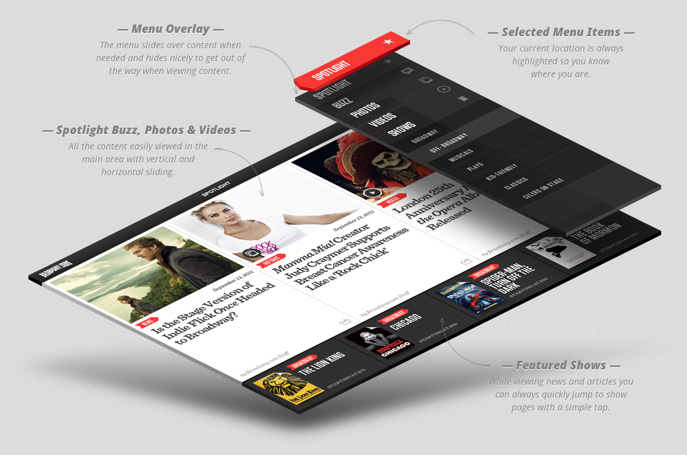
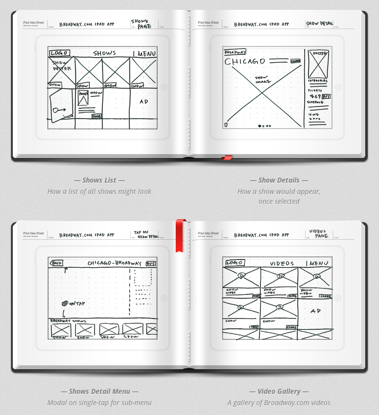
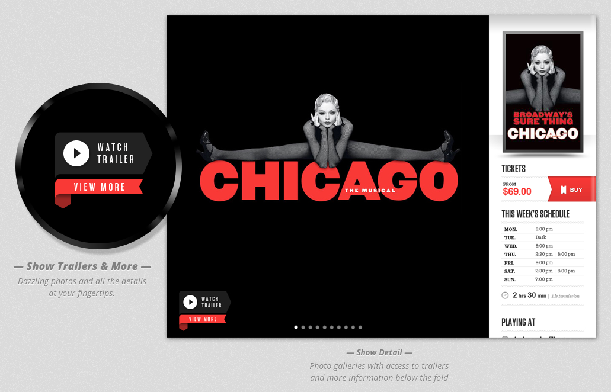
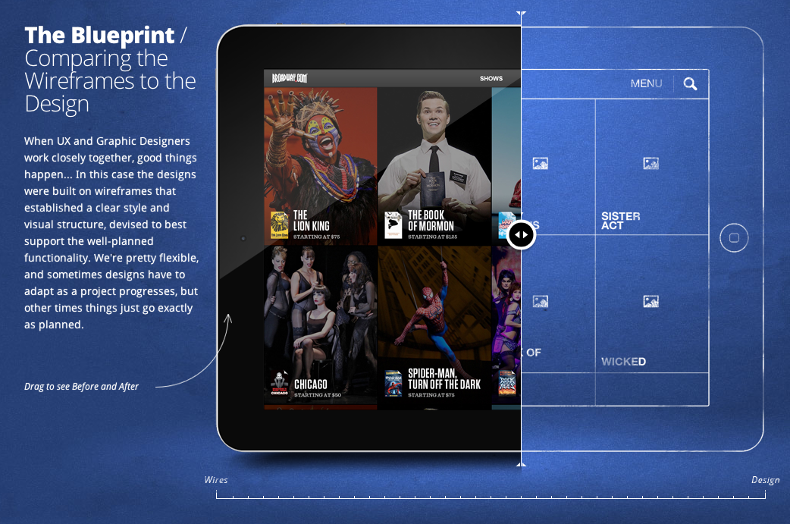

Fantasy Interactive Case Studies
Fi’s case studies are clearly in a league of their own to show off their client work. As a potential client you gain insight to their entire process and strategy, but as a designer the case studies are valuable tools in learning how to communicate design strategy with a client.
If you are a designer or a small design studio, this is the level of detail that you need to pour into every project to move beyond your tired hourly-based billing into the promise land of value based pricing. Charging by the hour is for chumps.
See the whole Broadway.com iPad App case study as well as Redbull TV, HTC Global, and History Channel’s Civil War 150.